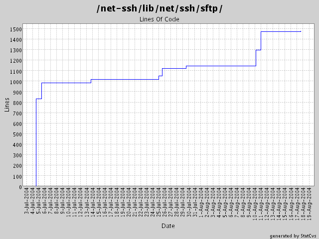

Generated by StatCvs v0.1.3
Summary Period: 2004-07-04 to 2004-08-17

Total Lines Of Code:
1475 (2004-08-17)
| User | Changes | Lines of code | Lines each change |
|---|---|---|---|
| minam | 22 (100.0%) | 1547 (100.0%) | 70 |
| Sum | 22 (100%) | 1547 (100%) | 70 |
|
minam 8/17/04 3:01 PM |
SFTP::Simple constructor now returns self if a block is not given. |
| 2 lines of code changed in: net-ssh/lib/net/ssh/sftp/simple.rb (+2) | |
|
minam 8/17/04 3:00 PM |
typo: rb_raise instead of raise |
| 1 lines of code changed in: net-ssh/lib/net/ssh/sftp/session.rb (+1 -1) | |
|
minam 8/11/04 12:01 AM |
Added more SFTP protocol coverage, including support for opening and manipulating files. Basic buffered file IO is supported as well. |
| 351 lines of code changed in: net-ssh/lib/net/ssh/sftp: session.rb (+175 -22), simple.rb (+176) | |
|
minam 8/10/04 3:21 AM |
Changed buffer implementation and refactored it to a new module. Added support for tunneling via HTTP proxy. |
| 18 lines of code changed in: net-ssh/lib/net/ssh/sftp: attrs.rb (+2 -2), session.rb (+16 -16), simple.rb (-1) | |
|
minam 7/29/04 1:27 PM |
Gabriele Renzi's suggestion of an open-uri interface for SFTP. This required some new methods be added to the SFTP interfaces (attributes, and size). Also modified the SFTP 'get' interfaces to support the specification of a 'chunk size' and a progress callback. |
| 106 lines of code changed in: net-ssh/lib/net/ssh/sftp: session.rb (+78 -4), simple.rb (+28 -4) | |
|
minam 7/25/04 2:30 PM |
SSH exception definitions. |
| 31 lines of code changed in: net-ssh/lib/net/ssh/sftp/errors.rb (new 31) | |
|
minam 7/25/04 12:03 AM |
First pass at creating SSH-specific exception classes, as recommended by Daniel Hobe. |
| 12 lines of code changed in: net-ssh/lib/net/ssh/sftp: attrs.rb (+2 -1), session.rb (+10 -10) | |
|
minam 7/13/04 4:26 PM |
Added "remove" and "rename" operations to the SFTP classes. |
| 99 lines of code changed in: net-ssh/lib/net/ssh/sftp: constants.rb (+4), session.rb (+67), simple.rb (+28) | |
|
minam 7/5/04 12:53 PM |
Added comments. Changed SFTP::Simple so that the synchronous operations only return the data that was requested, and the status is made a property of the Simple object itself. |
| 176 lines of code changed in: net-ssh/lib/net/ssh/sftp: attrs.rb (+10), session.rb (+80 -1), simple.rb (+86 -10) | |
|
minam 7/4/04 2:22 PM |
Added rudimentary SFTP support. Still undocumented. |
| 751 lines of code changed in: net-ssh/lib/net/ssh/sftp: attrs.rb (new 204), constants.rb (new 107), session.rb (new 365), simple.rb (new 75) | |

Generated by StatCvs v0.1.3